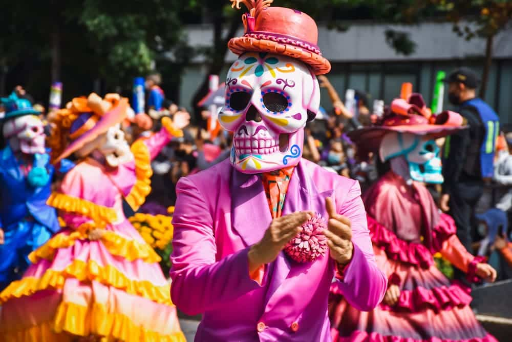
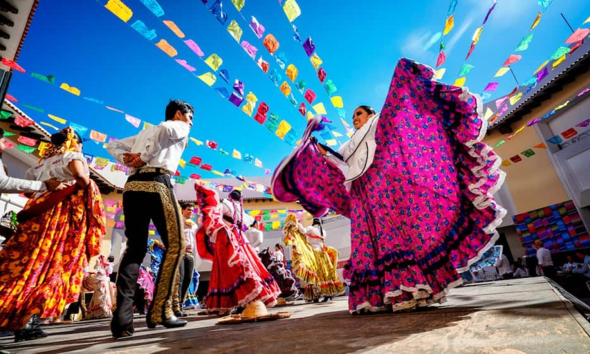
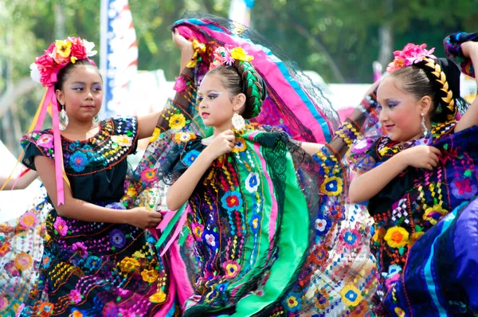
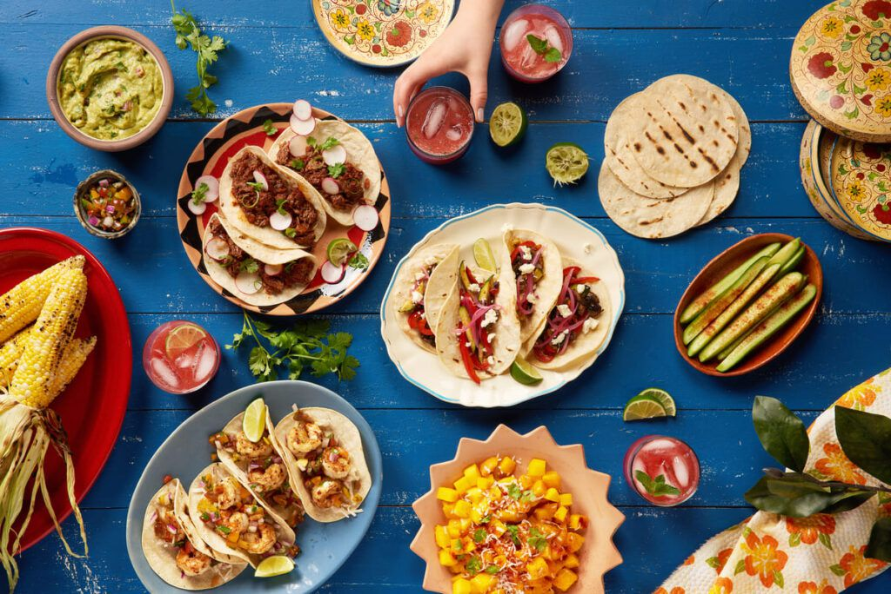

Cultura Mexicana
A cultura mexicana é uma mistura fascinante de influências indígenas, espanholas e outras provenientes de diferentes partes do mundo. É uma cultura rica e diversificada, enraizada em séculos de história e tradições. É caracterizada por uma hospitalidade calorosa, um senso de comunidade forte e uma paixão pela vida. Os mexicanos são conhecidos por sua alegria de viver, seu espírito festivo e sua capacidade de celebrar até mesmo os momentos mais simples da vida. A cultura mexicana é marcada por cores vibrantes, tradições arraigadas e uma história rica, tornando-a única e cativante.
A família tem um papel central na cultura mexicana, e os laços familiares são muito valorizados. A estrutura familiar é tradicionalmente patriarcal, com forte respeito pelos mais velhos e uma forte conexão entre gerações. As celebrações familiares, como casamentos, batizados e aniversários, são momentos importantes de união e celebração.
A religião também desempenha um papel fundamental na cultura mexicana. A maioria da população é católica, e as festividades religiosas são amplamente celebradas em todo o país. A Semana Santa e o Dia dos Mortos são dois dos festivais mais importantes, nos quais as tradições religiosas se misturam com crenças indígenas antigas, criando celebrações coloridas e cheias de significado.
A música e a dança são elementos essenciais da cultura mexicana. Os ritmos tradicionais, como o mariachi, a música ranchera e a música folclórica, são altamente apreciados e celebrados. A dança também desempenha um papel importante, com estilos como a dança folclórica e os movimentos rituais indígenas sendo preservados e transmitidos de geração em geração.
A arte mexicana é conhecida por sua vivacidade e expressão. A pintura muralista, com artistas como Diego Rivera, José Clemente Orozco e David Alfaro Siqueiros, tem um papel proeminente na história da arte mexicana, retratando temas políticos, sociais e culturais. Além disso, a arte popular mexicana, incluindo artesanato, escultura em madeira, cerâmica e tecelagem, é apreciada pela sua habilidade e beleza.
A gastronomia mexicana é reconhecida mundialmente por sua riqueza de sabores e ingredientes frescos. Pratos tradicionais como tacos, enchiladas, guacamole e mole são apreciados em todo o mundo. A culinária mexicana é conhecida por seus sabores ousados, uso abundante de especiarias e uma variedade de ingredientes, incluindo pimentas, milho, feijão, abacate e chocolate.
- 
- 
- 
- 